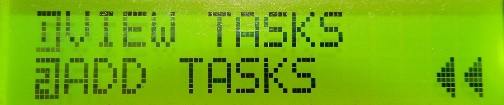
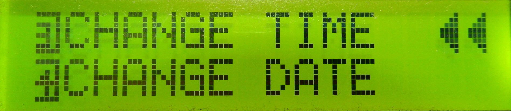

Menu Page


void Interface_Menu()
{
Functions_LCD.createChar(0, Symbols_leftArrow);
Functions_LCD.createChar(1, Symbols_char1);
Functions_LCD.createChar(2, Symbols_char2);
Functions_LCD.createChar(3, Symbols_char3);
Functions_LCD.createChar(4, Symbols_char4);
Functions_LCD.createChar(5, Symbols_char5);
// Pointers
Functions_LCD.setCursor(15, Functions_pointer);
Functions_LCD.write(byte(0));
Functions_LCD.setCursor(14, Functions_pointer);
Functions_LCD.write(byte(0));
// Menu options
switch(Functions_scrollPage)
{
// Display View and Add
case 0:
{
Functions_LCD.setCursor(0, 0);
Functions_LCD.write(1);
Functions_LCD.setCursor(1, 0);
Functions_LCD.print(menuOptions[0]);
Functions_LCD.setCursor(0, 1);
Functions_LCD.write(2);
Functions_LCD.setCursor(1, 1);
Functions_LCD.print(menuOptions[1]);
break;
}
// Display change time and change date
case 1:
{
Functions_LCD.setCursor(0, 0);
Functions_LCD.write(3);
Functions_LCD.setCursor(1, 0);
Functions_LCD.print(menuOptions[2]);
Functions_LCD.setCursor(0, 1);
Functions_LCD.write(4);
Functions_LCD.setCursor(1, 1);
Functions_LCD.print(menuOptions[3]);
break;
}
}
Functions_Menu();
}
void Functions_Menu()
{
// BUtton controls for Menu page
Buttons_Update();
switch(Buttons_ReturnPressedButton())
{
// Go to Home page
case RIGHT_BTN:
{
Functions_LCD.clear();
Buttons_ResetReturnedButton();
Functions_currentPage = HOME;
break;
}
// Scroll up
case UP_BTN:
{
if(Functions_pointer == 1) Functions_pointer = 0;
else if(Functions_pointer == 0 && Functions_scrollPage == 0) {Functions_scrollPage = 1; Functions_pointer = 1;}
else if(Functions_pointer == 0 && Functions_scrollPage == 1) {Functions_scrollPage = 0; Functions_pointer = 1;}
Buttons_ResetReturnedButton();
Functions_LCD.clear();
break;
}
// Scroll down
case DOWN_BTN:
{
if(Functions_pointer == 0) Functions_pointer = 1;
else if(Functions_pointer == 1 && Functions_scrollPage == 0) {Functions_scrollPage = 1; Functions_pointer = 0;}
else if(Functions_pointer == 1 && Functions_scrollPage == 1) {Functions_scrollPage = 0; Functions_pointer = 0;}
Buttons_ResetReturnedButton();
Functions_LCD.clear();
break;
}
// Select one of the menu options
case SELECT_BTN:
{
Buttons_ResetReturnedButton();
Functions_LCD.clear();
// View task option selected
if(Functions_scrollPage == 0 && Functions_pointer == 0)
{
Functions_LCD.clear();
Functions_currentPage = VIEW_TASKS;
Functions_pointer = 0;
Functions_scrollPage = 0;
}
// Add task option selected
else if(Functions_scrollPage == 0 && Functions_pointer == 1)
{
Functions_LCD.clear();
Functions_currentPage = ADD_TASKS;
Functions_pointer = 0;
Functions_scrollPage = 0;
Functions_newTime = "12:00:00AM";
}
// Change time option selected
else if(Functions_scrollPage == 1 && Functions_pointer == 0)
{
Functions_LCD.clear();
Functions_currentPage = CHANGE_TIME;
Functions_pointer = 0;
Functions_scrollPage = 0;
}
// Change date function selected
else if(Functions_scrollPage == 1 && Functions_pointer == 1)
{
Functions_LCD.clear();
Functions_currentPage = CHANGE_DATE;
Functions_pointer = 0;
Functions_scrollPage = 0;
Functions_newTime = "12:00:00AM";
}
}
}
}